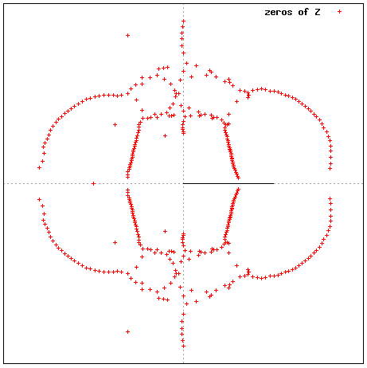
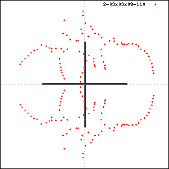
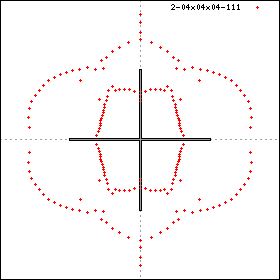
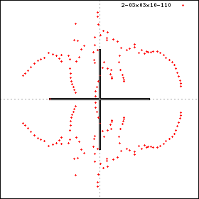
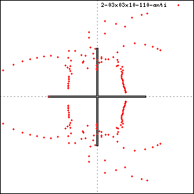

TOP
/ UP /
BACK
3d Ising model Partition Function Zeros
P P Martin and Y Valani
This page is under construction.
This model was originally studied
in the exact finite lattice approach
by Pearson [P82] and Martin [M82,M83]
(Martin studied the dual Ising lattice gauge theory),
revisited by Bhanot [B95], Valani [V11], and Martin-Valani [MV11].
Unless otherwise stated, results given here can be found in [V11].
Results here are for simple cubic lattices of dimension NxMxL,
for various choices of N,M,L.
Boundary conditions:
NxMxL means periodic BCs in every directio.
NxMxL' means peiodic in N,M directions and open BCs in L direction;
and so on.

Table of figures
Figs are plotted in x unless otherwise stated.
- 4x4x10' (independently computed by two different programs)
- 3x3x9'
- 3x3x10'
- 3x3x10' (plotted in 1/x)
- 4x4x4
Commentary
Note that with suitable BCs this model has an 8-fold symmetry:
x -> 1/x (unit circle inversion)
x -> -x (imaginary-axis reflection)
x -> x* (real-axis reflection)
With such BCs the zero distribution is determined by the distribution in the first quadrant of the unit disk (or any component of the orbit thereof).
However, many BCs break one or both of the first two symmetries.
If we believe that BCs do not affect the distribution in the large lattice limit (*?) then the departure from symmetry in a finite lattice case gives us a
very crude measure of the distance of this lattice size from the limit
part of the sequence.
For example, consider the 4x4x10' distribution, which
has the inversion symmetry but not the x->-x symmetry.
We claim that it
is (by eye) relatively left-right symmetrical
compared to the 3x3x9' distribution.
The first two results obtained for this model were 4x4x4 [P82] (64 lattice sites)
and up to 3x3x9' [M83] (72 lattice sites).
The 4x4x4 result exhibits the 8-fold symmetry.
The 3x3x9' result breaks two of these symmetries.
In particular 3x3x9' exhibits the property of AF-frustration,
meaning that it is not possible to construct a standard checkerboard AF
groundstate on such a lattice.
In contrast, the trivially ordered Ferromagentic groundstates are present.
On this basis one expects the model to be a better approximation to the
large lattice limit in the F than the AF region.
With the above remarks
in mind we invite the reader to compare the ferro part of the
distribution (and that of 3x3x10') with the 4x4x4 case below.
To this end we have also plotted 3x3x10' in 1/x. Here the ferro part
is in the first quadrant of the unit circle.




Library of zeros data, model by model
- 1d Ising model, and generalities
- 2d Ising model -- The control case (via Onsager's solution)
- 3d Ising model
- Q-state Potts models
- Clock models
zeros (c) Paul Martin